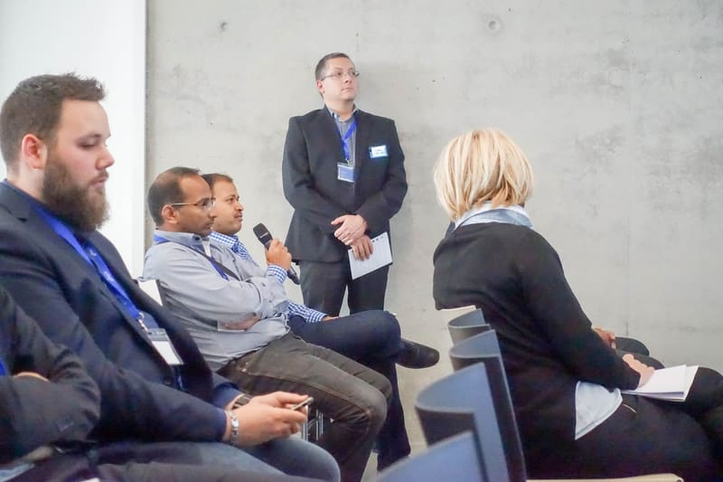
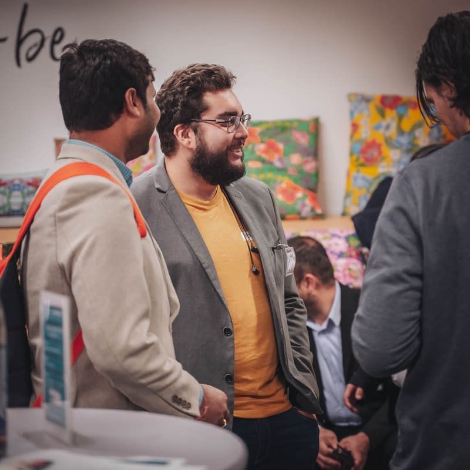

Testing takes centre stage
Mobile testing, test automation, security and IoT, continuous testing and DevOps, shared by testers, QA professionals and developers.
LSTE has been bringing Luxembourg’s software testing and quality community together since 2014.
Since 2014, LSTE has evolved alongside Luxembourg’s software testing and quality community, bringing together practitioners, experts, organisations and technology leaders around the changing world of software quality.



From testing techniques to quality engineering, AI and digital delivery: the topics have broadened, and so has the room.
Mobile testing, test automation, security and IoT, continuous testing and DevOps, shared by testers, QA professionals and developers.
Quality becomes a transverse activity across software delivery, with automation growing in every team.
Generative AI in testing, data quality, accessibility, security and performance, with product, delivery and technology leaders joining practitioners in the room.

LSTE through the eyes of the community and Luxembourg’s technology media.
Previous programmes, speakers and event archives are available on request.